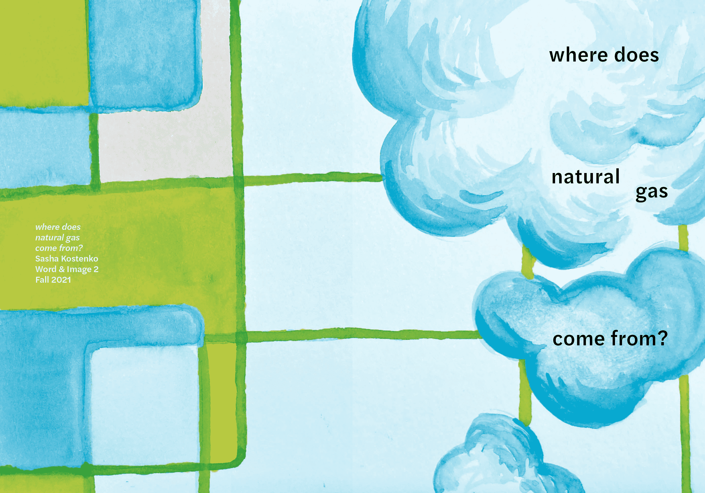

Home
Back
Next
Natural Gas
Booklet
Print Design, Illustration
Tasked with producing a booklet explaining the origin of natural gas, I explored several approaches — type only, image only, and a combination of both — before selecting the latter. Using analog materials allowed me to imbue the industrial nature of gas production with a more organic feeling.


© Sasha Kostenko 2022. Website developed by Sasha Kostenko. sasha.kostenko@wustl.edu